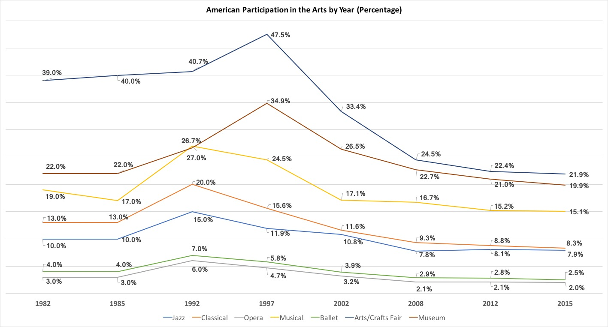
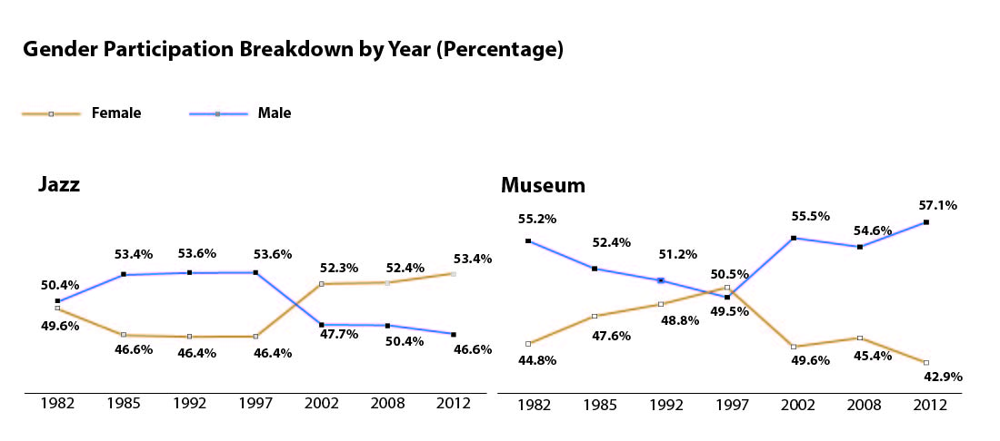

A Look at Americans' Participation in the Arts
A once thriving sector for education and thought leadership, art such as musicals, ballets, operas and museums were the pinnacle of American discussion and participation. For the last two decades, the general population has been decreasingly involved in participating in any form of the arts. This includes attending a concert or festival of a certain genre of music, watching ballets, operas and musicals in theaters and going to observe art at fairs and museums.
One cause many art historians blame is Congress’ constant attack and defunding of art involvement. The office of the presidency recently took aim at agencies such as the National Endowment for the Arts (NEA), suggesting a complete overhaul is to take away all funding from it.
However, this trend is not one that’s particularly new. The federal government has always dealt with budgets and one of the most common sects to decrease funding to was art. In 2011, Congress was on the verge of completely eradicating all funding to the NEA. In the end, the amendments for the legislation proposed were shot down, but a few art historians believe the attempt to remove arts from the agenda caused a negative perception with the public.
The chart above shows an increase in arts participation between 1982 and 1997 for almost all major categories. Since 1997, there has been a constant decline in participation to today. One pivotal moment was the congressional cut of 1996, which resulted in nearly $100 million of funding being removed from the NEA. The ramifications were considered huge with education because part of that defunding meant fewer field trips to art institutes and art fairs for public school students between K-12.

Aside from a general decline in participation, the last two and a half decades have shown a prominent increase in minority participation across all major art sections. Although whites made up most of the participation in each category, blacks and other races have shown significant strides in jazz, musical and museum involvement.
In terms of gender participation, the most interesting findings show a crossover in jazz participation between men and women. Between 1997 and 2002, women became the lead participators in jazz festivals and concerts and remained on top since. Additionally, in 1997 men overtook women in museum participation, only to fall a significant 6% the following period.
No research has been connected between the 1997 gender trends and the congressional defunding to the NEA in 1996.